Tu armario, por fin con sentido.
édit ordena tu ropa, crea looks con ella y te los enseña sobre una foto tuya.
-
Lo que llevas, ya es tuyo.
Sube una foto tuya de cuerpo entero o fotografía tus prendas. édit reconoce cada una, le quita el fondo y la guarda en tu armario.
-
Todo, en su sitio.
Tu ropa se ordena sola por tipo, color y temporada. Encuentra cualquier prenda en un segundo.
-
Sácale más a lo que ya tienes.
édit combina tu ropa y te propone looks pensados para tu semana, el clima y tu estilo. Y puedes montar los tuyos.
-
¿Te queda bien?
Elige un look y míralo sobre una foto tuya, en un toque. Así te queda, antes de ponértelo.
Cada semana, sin pedirlo.
Recibes una selección de looks para los próximos días, pensada para tu semana y para el tiempo que va a hacer. Cada semana te conoce mejor.
No todo te sienta igual. Descubre tu colorimetría entre doce estaciones y recibe cada look pensado con tu paleta.
Un test de ocho preguntas define tu arquetipo de estilo. Y tus looks salen de ahí.
La tecnología no sustituye el criterio. Lo amplifica.

Tu estudio digital de estilismo.
¿Eres asesora de imagen, estilista o personal shopper? Tus clientas, sus armarios y tus looks, en un sitio. En web y en app.
- Todas tus clientas, de un vistazo.
- Colorimetría, estilo y armario, juntos.
- Entrégale un dossier de estilismo.
Vístete sin dudas.
Digitaliza tu armario, crea looks con la ropa que ya tienes y conecta con tu asesora de imagen.
Descargar édit es gratis. Algunas funciones son de la suscripción Premium, que se contrata en la app.